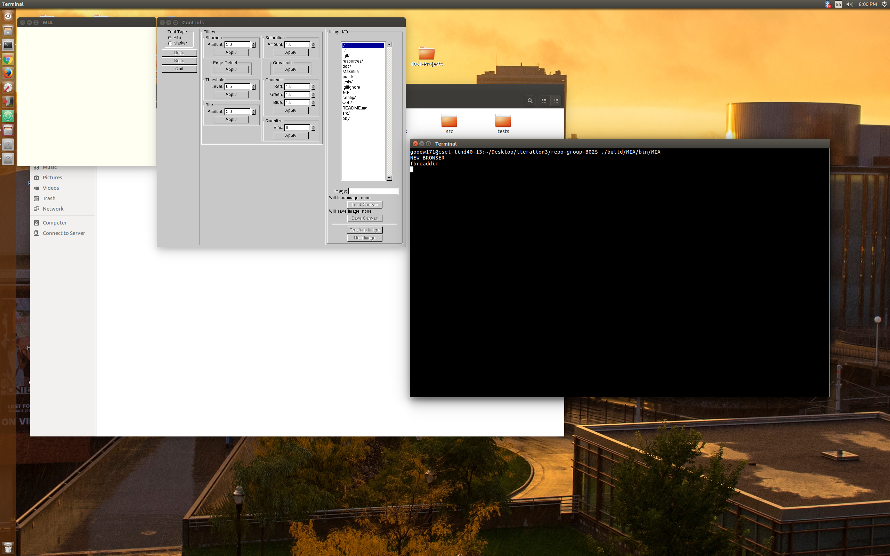

Navigate to the mian directory of our program.
Build the program with make by typing "make" into the terminal.
If this doesn't initially work, type "mkdir build" to create a build directory.
Run the executable (program) with ./build/MIA/bin/MIA
If done correctly, the GUI will pop up and look like the following below:

Load the image.
This can be done by using the IMAGE I/O menu, finding the correct image you want to load, double clicking the image and then clicking the "Load Image" button.

Blur the image slightly (to reduce noise).
The range is 0.0-20.0. We recommend blurring by 1.0.

Quantize the image into 4 segments. This will split the colors(rgb) into ranges of 0-25, 25-50, 50-75 and 75-100 and changes the colors accordingly.

Save the image to a new directory by clicking the save image button in the program.
If there is not already a filename (with which to save), type a desired filename followed by either a ".jpg" or ".png" extension.
You can (and we recommend) that you save the image to a specific directory (file). This can be done by adding filename/ before the image save name.

Make sure all of your images follow the correct naming convention of:
filename###.extension Where ### is a numerical sequence amongst your images from 000 - 999. Make sure the extension is the same for all of the images ("png" or "jpg").
Make sure you are in the correct directory. If unsure, follow the tutorial found on the Command line link found in our User Support page.
Create a folder where you want to store all your saved images by typing into the command line: mkdir "directory_name".
In the Command line, type the following to perform the CT Scan set of operations:
./build/MIA/bin/MIA image_name###.extension -blur 1.0 -quantize 4 new_directory/outfile###.extension